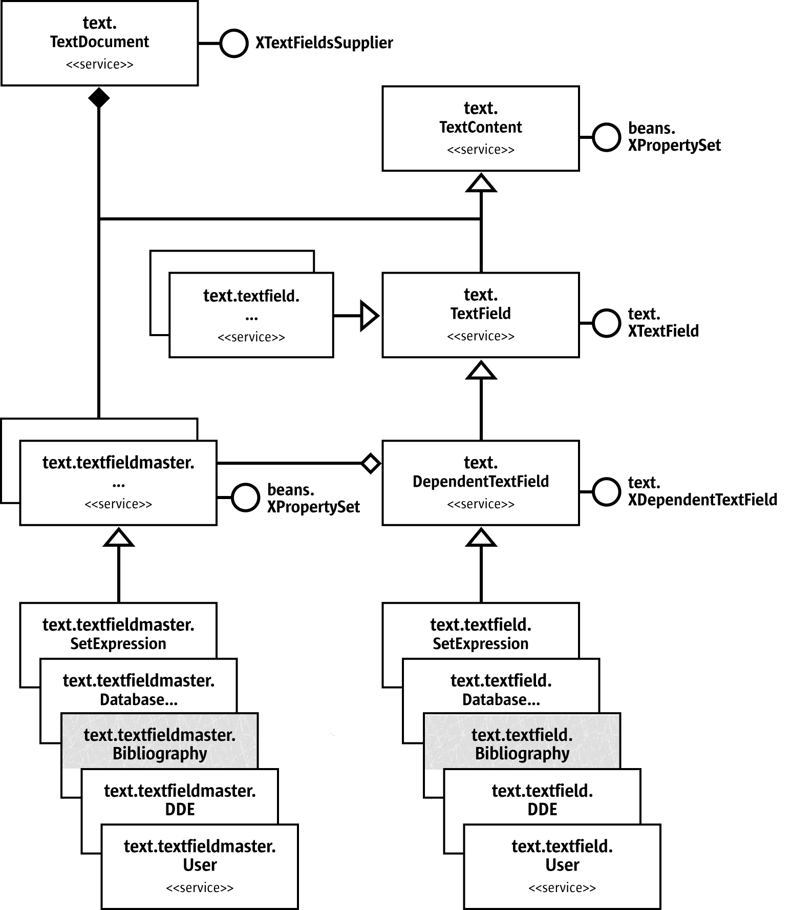

OpenOffice Bibliographic implementation
| Last Modified 2006-October-14 | A printer friendly PDF version of this page is available implementation.pdf (134Kb) |
Contents
Objective
This page provides some basic information about how Openoffice implements its bibliographic functions. It provides links to the detailed documentation provided by Openoffice. For related information see the Developer page. For details of our proposals for enhanceing the bibliographic API's see the wiki page.
File Save format
| A simple example of how OpenOffice stores bibliographic information
in its XML save file format xml-contents.html
The OpenOffice XML file format document is available. The bibliographic references are on pages 450-451 & 467-471 at http://xml.openoffice.org/general. |
OpenOffice XML schemas
| See the XML project site http://xml.openoffice.org
The OpenOffice file format DTD files are at http://xml.openoffice.org/source/browse/xml/xmloff/dtd/ , it is a large document so we have extracted the bibliographic bits in bib-dtd-bits.html . A proposal to improved Openoffice XML support for citations in the OOo document format has been accepted by the OASIS OpenOffice XML Format Technical Committee (meeting minutes). See our XML Citation Proposal.pdf . |
OpenOffice Bibliographic API code functions
| This section contains a brief description of the OpenOffice Writer code functions that implement bibliographic services. Use the link to the full documentation to see more detailed explanations. |
TextField
http://api.openoffice.org/docs/common/ref/com/sun/star/text/TextField.html
Description
A TextField is a TextContent which fades its textual representation into the text range to which it is anchored.See the Developers Guide 7.3.5 Text Documents - Working with Text Documents - Text Fields
"Text fields are text contents that add a second level of information to text ranges. Usually their appearance fuses together with the surrounding text, but actually the presented text comes from elsewhere. Field commands can insert the current date, page number, total page numbers, a cross-reference to another area of text, the content of certain database fields, and many variables, such as fields with changing values, into the document. There are some fields that contain their own data, where others get the data from an attached field master."
 |
Included Services
TextContent is an object which can be anchored in a text, like instances of TextFrame or TextFields .
Exported Interfaces
XTextField
Description
This interface is used to access the textual representation of this field.
[ OPTIONAL ]
Description
makes it possible to access the properties of the field, if any.
Comment by David Wilson
The data fields in the bibliography need to support complex formatted text and objects and this is not possible with the current text field. For example some scientific document titles need to be able to display words in Italics.
In discussing how to achieve this, Oliver Specht, has advised that the best approach was to enhance the bookmark object.
A possible solution is "to add a new object that is similar to bookmarks(com.sun.star.text.Bookmark). This extended bookmark would also carry a DOM tree property. This 'bookmark' can span over formatted text longer than a paragraph. The user can modify the text inside of this bookmark easily. An interface to access the new elements needs to be implemented (sorted by document position).
The DOM interfaces are in com.sun.star.xml.dom. (e.g. XDocument.idl,XNode.idl,XElement.idl)
There's also a service com.sun.star.xml.dom.DocumentBuilder available that supports the creation of DOM trees.
The bibliography component works on the DOM tree and can manipulate it independently. In case of using a field the component has to set the resulting string representation of the reference at this field." See issue 66979
XTextField.html#getPresentation
http://api.openoffice.org/docs/common/ref/ com/sun/star/text/XTextField.html#getPresentation Description is the base interface for all text fields. A text field is embedded in text and expands to a sequence of characters. See also Methods' Summary getPresentation Methods' Details getPresentation string getPresentation( [in] boolean bShowCommand ); Returns the display string of the text field either as the command of the field or as the output string. Parameter bShowCommand if true the command of the field will be returned |
Bibliography
http://api.openoffice.org/docs/common/ref/com/sun/star/text/Bibliography.html# Descriptionspecifies service of bibliography table within a text document. See also BaseIndex. Included ServicesBaseIndex : specifies the basic service of different indexes within a document. Properties' SummaryLocale : contains the locale of the index. SortAlgorithm : contains the name of the sort algorithm that is used to sort the entries. |
textfield/Bibliography
http://api.openoffice.org/docs/common/ref/com/sun/star/text/textfield/Bibliography.html#
Descriptionspecifies service of a bibliography text field. Bibliographic entry created by Insert – Indexes and Tables – Bibliography Entry. The content is the source of the creation of bibliographic indexes. The sequence <PropertyValue> in the property "Fields" contains pairs of the name of the field and its content, such as: The names of the fields are defined in BibliographyDataField. A bibliographic entry depends on FieldMaster.Bibliography |
FieldMaster/Bibliography
http://api.openoffice.org/docs/common/ref/com/sun/star/text/FieldMaster/Bibliography.html
Descriptionspecifies service of a Bibliography [table] field master. Included ServicesA TextFieldMaster field specifies important data for its DependentTextFields. Properties' SummaryIsNumberEntries : determines whether the bibliography text fields are numbered. If the short name of the bibliography entry is displayed instead. IsSortByPosition : determines whether the bibliography entries in a bibliography index are sorted by the document position. If the SortKey property determines the sorting of the entries. BracketBefore : determines the opening bracket used to display the bibliography text fields. BracketAfter : determines the closing bracket used to display the bibliography text fields. SortKeys : determines the sorting of the bibliography entries in a bibliography index. This property is used if the property IsSortByPosition is not set. Each contained element of the sequence is a sequence of the following two properties: Locale : contains the locale of the field master. SortAlgorithm : contains the name of the sort algorithm that is used to sort the text fields. Comment by David WilsonThe range of options will need to be enhanced. |
BibliographyDataField
http://api.openoffice.org/docs/common/ref/com/sun/star/text/BibliographyDataField.html#
DescriptionThese values define parts of bibliographic data. They are used to create a bibliography in a text document. Depending on the type of the data some of the fields will usually be left empty. Constants
Comment by David WilsonThis field is currently inserted with every bibliographic citation instance. No link is maintained with the original data source in the bibliographic database. If a mistake is made each separate instance of the field must be re-inserted or corrected manually. It is proposed that a new field be created a 'MasterBibliographyDataField' which would be inserted the first time a citation was used and all BibliographyDataFields would contain a link to their MasterBibliographyDataField. The MasterBibliographyDataField would be linked to its datasource (initially the bibliographic database, but others are possible) and would be updated by the Writer link update function. When the MasterBibliographyDataField was updated all the linked BibliographyDataField instances, and the Bibliographic Table would be updated as well. |
TextSection
| http://api.openoffice.org/docs/common/ref/com/sun/star/text/TextSection.html
A TextSection is a range of complete paragraphs within a text. The content of the section may be the content of a link into another document, a link from the same document, or the result of a DDE operation. TextSection instances can be linked from and to other texts
Comment by David WilsonIt is proposed that the new bibliographic table mechanism Citproc be used to insert the bibliographic table into a TextSection. |